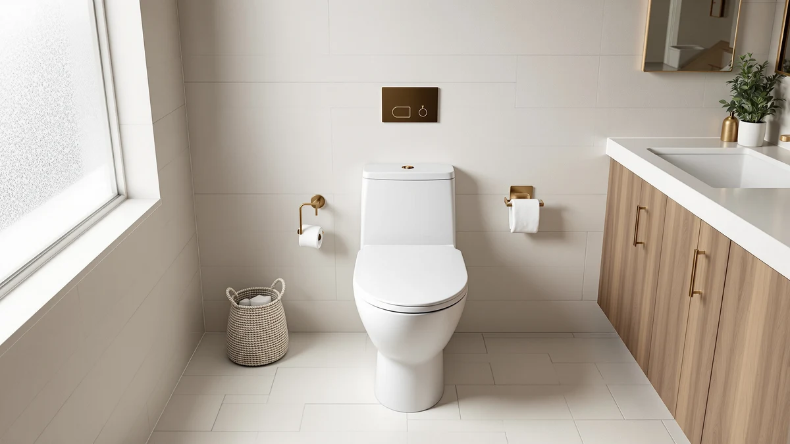

How to Install a One Piece Toilet (2026): Step-by-Step DIY Guide
Prices and picks verified as of August 2026. Independent, reader-supported reviews.


Things to Know Before You Buy
- One piece toilets weigh more than two-piece models, often 90 to 120 pounds, so plan for a second person when you lift the new fixture into place.
- You don't need a plumbing license to swap a toilet in most US states, but check local code if you're also relocating the drain line.
- Budget about $20 for a new wax ring, closet bolts, and caulk if you're reusing your existing supply line and flange.
- Most one piece toilets install directly onto a standard 12-inch rough-in, so measure yours from the wall to the center of the drain before you buy a replacement.
- Wait at least 30 minutes after installation before you flush hard, so the wax ring and caulk have time to seat.
Learning how to install a one piece toilet saves you a plumber's callout fee and usually takes under two hours from start to finish. A one piece design fuses the tank and bowl into a single unit, so there's one less seam for water to find and fewer bolts to align than on a two-piece toilet. This guide walks you through every step, from shutting off the water to caulking the base, using tools most homeowners already keep in a garage or under the sink.
The job asks for patience more than plumbing experience. You'll remove the old fixture, clean and reseal the flange, set the new toilet, hook up the supply line, and check for leaks before you call it finished. The one part that trips up first-timers is the wax ring: get that seal wrong and you'll be pulling the toilet back up within a week. Follow the order below and you avoid that redo entirely, along with the two complaints that account for most toilet installation callbacks: a base that rocks and a slow leak at the floor.
What You'll Need
- Supplies: wax ring with flange, closet bolts and washers, 100% silicone caulk, and a new supply line if yours shows wear
- Tools: adjustable wrench, torpedo level, putty knife, and a bucket and sponge for cleanup
Step 1: Shut Off the Water Supply and Remove the Old Toilet
Turn the oval shutoff valve behind the toilet clockwise until it stops, then flush to drain most of the water out of the tank. Sponge out whatever water remains in the tank and bowl, since it spills the moment you tip the toilet on its way out the door.
Disconnect the supply line where it threads into the base of the tank, then pry the plastic caps off the closet bolts at the floor and remove the nuts with an adjustable wrench. Rock the toilet gently from side to side to break the old wax seal, then lift it straight up and set it on an old towel out of the way.
Stuff a rag into the open drain pipe right away. Sewer gas escapes fast once the seal is broken, and small tools or hardware can fall in while you're working on the next steps.
Step 2: Clean the Flange and Set the Wax Ring
Use a putty knife to scrape the old wax off the flange and the floor around it, then check the flange itself for cracks, rust, or a broken lip. A flange that sits more than a half inch below the finished floor won't seal properly, so add a flange extender kit before you continue if that's what you find.
Drop new closet bolts into the flange slots so they stand straight up, then press a wax ring onto the flange with the tapered side down, or onto the underside of the toilet's outlet if that's easier for you to control. Don't slide the ring around once it makes contact with either surface, because that smears the wax and weakens the seal you're trying to build.
Step 3: Position and Bolt Down the One Piece Toilet
One piece toilets run 90 to 120 pounds, so bring in a second person to help you lift and lower the fixture. Line up the mounting holes in the base with the two closet bolts, then lower the toilet straight down onto them. Don't tilt or drag it once it touches the wax ring, since that breaks the seal you set in step two.
Sit on the bowl or press down evenly with both hands to seat the wax, then thread the washers and nuts onto the bolts. Tighten them a quarter turn at a time, alternating sides, until the toilet stops rocking. Stop as soon as it feels snug: overtightening cracks the porcelain base, and that mistake usually means buying a whole new toilet.
Check the toilet with a torpedo level across the tank lid and again across the seat hinge area, then slide thin plastic shims under the base wherever it rocks. Snap off any shims that stick out past the edge once the toilet sits level.
Step 4: Connect the Water Supply and Fill the Tank
Thread the supply line onto the fill valve at the base of the tank by hand, then give it a quarter turn with the wrench, enough to stop drips without stripping the connection. Turn the shutoff valve counterclockwise to open it and let water flow into the tank.
Watch the tank fill and confirm the float shuts the water off at the level marked inside, usually about an inch below the overflow tube. Adjust the fill valve if the water runs past that line or shuts off too early.
Step 5: Check for Leaks and Caulk the Base
Flush the toilet three or four times and run your hand around the base, the supply line connection, and the tank bolts underneath, feeling for dampness. A slow drip at the base usually means the wax seal didn't set, which means pulling the toilet and starting the ring again, so catch it now rather than after the floor swells.
Once everything checks dry, run a bead of 100% silicone caulk around the base of the toilet where it meets the floor, leaving a small gap at the back so any future leak has somewhere visible to show up. Let the caulk cure for the time listed on the tube, typically 24 hours, before you clean the floor around it.
Common Mistakes to Avoid
Overtightening the closet bolts is the most common mistake in a one piece toilet install, and it's also the most expensive one. Porcelain cracks under too much torque, and a hairline crack near the base often doesn't show up until weeks later when it starts weeping water. Tighten in small increments and stop as soon as the toilet stops rocking.
Reusing an old wax ring is another shortcut that backfires. Wax rings compress once and don't reseal after you break the seal to check the flange, so buy a new one even if the old one looks intact. The few dollars you save aren't worth a leak that rots the subfloor underneath.
Skipping the level check causes problems that show up months later. A toilet that sits even slightly off level puts uneven pressure on the wax ring over time, which shortens the seal's life and can crack the porcelain base at the point that carries the most weight. Two minutes with a torpedo level during installation prevents most of this.
Finally, don't caulk around the entire base right after setting the toilet. Leave a gap at the back and wait until you've confirmed there are no leaks. A fully caulked perimeter hides a slow leak until it has already damaged the floor underneath, which turns a $20 repair into a much larger one.
Our Top Picks
If you're shopping for the one piece toilet you'll install using the steps above, these three models come up often in owner reviews for a straightforward fit on a standard rough-in and a seal that holds up over time.

Editor's Pick
Casta Diva Elongated One Piece
Owners like the elongated bowl's comfortable seat height and a quiet-close lid that doesn't slam, a common complaint on cheaper models.
$259.99
Check Price on Amazon
Best Value
DeerValley Elongated One Piece Toilet
Reviewers consistently note the dual-flush valve keeps water use low without sacrificing bowl-clearing power, and the price undercuts most elongated competitors.
$227.05
Check Price on Amazon
Premium Choice
Toilet One-Piece Round Side Flush
The side-mounted flush lever and compact round bowl suit smaller bathrooms, and owners report the skirted base makes floor cleaning noticeably easier.
$209.99
Check Price on AmazonFrequently Asked Questions
How long does it take to install a one piece toilet?
Most homeowners finish a one piece toilet installation in about 1 to 2 hours, including removing the old fixture, setting the wax ring, and connecting the water supply. Add extra time if your flange needs repair or if this is your first installation.
Do I need a plumber to install a one piece toilet?
No, a plumber is not required for most installations, since swapping a toilet on an existing drain and supply line is a standard DIY task. Hire a plumber if you are moving the drain location, if the flange is damaged, or if the shutoff valve itself needs replacement.
Why is my one piece toilet rocking after installation?
A rocking toilet almost always means the floor is uneven under the base or the closet bolts were not tightened evenly on both sides. Slide thin plastic shims under the low side until the toilet sits level, then trim the excess before caulking.
Can I reuse the old wax ring when installing a new toilet?
No. Wax compresses permanently the first time you set it, so a used ring will not reseal properly against the flange. A new ring costs about $5 and is the cheapest insurance against a leak at the base.
How do I know if the wax ring seal failed?
Watch for water pooling around the base after you flush, a sewer smell in the bathroom, or soft or discolored flooring near the toilet. Any of these signs means you should pull the toilet, inspect the flange, and set a new wax ring before the leak spreads to the subfloor.
Verdict
Once you know how to install a one piece toilet, the job comes down to patience more than skill. Shut off the water, clear the old seal completely, set a fresh wax ring, and tighten the bolts evenly, and you avoid the two problems behind almost every callback: a rocking base and a slow leak at the floor. Budget an afternoon rather than an hour for your first attempt, since checking for level and confirming there are no leaks matters more than finishing fast.
If you're buying a new fixture for this project, the Casta Diva Elongated One Piece is a solid pick among the models we compared, with an elongated bowl and a quiet-close lid that owners rate highly for comfort and durability. Whichever toilet you choose, the steps above apply the same way, and a level base with a properly seated wax ring is what keeps any one piece toilet leak-free for years.